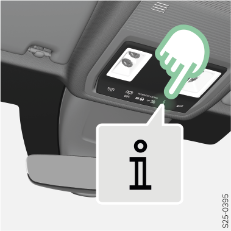

Appuyer sur la touche .
En appuyant sur le bouton la connexion à la ligne d'information locale est établie.
 la connexion à la ligne d'information locale est établie.. la connexion à la ligne d'information locale est établie.
la connexion à la ligne d'information locale est établie.. la connexion à la ligne d'information locale est établie.